Patterns of Home Run Hitting in the Statcast Era
1 Intoduction
This paper provides a statistical look at the patterns of home run hitting during the history of Major League Baseball. Section 2 describes the general home run hitting patterns together with the famous hitters associated with the different peaks in home run hitting. Due to the recent surge in home runs, MLB appointed a committee to better understand the reasons behind this increase. Section 3 summarizes the conclusions from this committee.
Using the Statcast database, one has launch angle and exit velocity measurements for every batted ball hit between 2015 and 2022. Section 4 takes an exploratory view of these data. The focus is on the comparison of launch variable rates and home run rates across the Statcast era. Section 5 views these data from a modeling perspective. A generalized additive model is used to relate the home run outcome with the launch variables. One can learn about the properties of the manufactured ball for one season by this model fit, and use predictions from this model to explore changes in the baseball in future seasons. Figure 6 gives references to recent articles, blog posts, and Shiny apps on this particular view of home run hitting.
2 History of Home Run Hitting
2.1 Overview
There has been a steady increase in home run hitting during the history of Major League Baseball. The following figure displays the average number of home runs hit per team per game from 1871 through 2022.
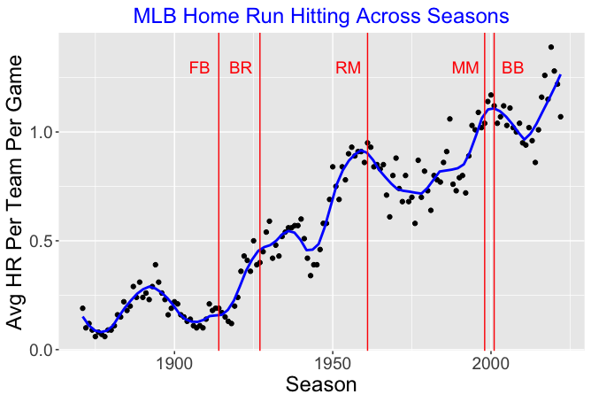
Since the 1950 season, there have been three significant peaks in home run hitting, the first peak in the early 1960’s, the second about 2000, and the last peak in the recent seasons about 2019-2021.
The figure includes five vertical lines corresponding to the seasons of these particular noteworthy individual hitting accomplishments.
2.2 Statcast Era
We focus on the dramatic changes in home run hitting during the Statcast era from 2015 to 2022. The following table gives the home run totals for seven seasons excluding the shortened 2020 season.
| Season | HR Total |
|---|---|
| 2015 | 4909 |
| 2016 | 5610 |
| 2017 | 6105 |
| 2018 | 5585 |
| 2019 | 6776 |
| 2021 | 5944 |
| 2022 | 5215 |
Scanning the table, we see
- a steady increase in home run hitting from 2015 to 2017
- a sharp decrease in home runs in the 2018 season followed by a sharp increase in 2019
- significant drops in home run hitting during the 2021 and 2022 seasons
2.3 Historical Hitting Rates
To get a reasonable measure of home run performance, it is helpful to describe the primary outcomes of a plate appearance. When a batter comes to bat, there are three basic outcomes: a batter can strike out, he can walk, or he can put the ball in play.
The following figure shows how the the rates of the three basic outcomes have changed over the period from 1960 through 2022. A smoothing curve is drawn over each group of points to show the basic patterns.
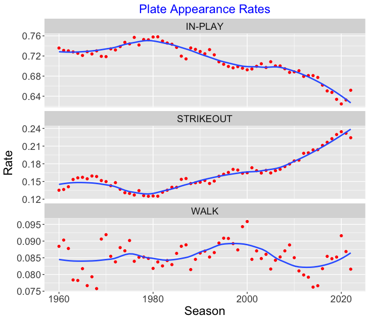
It is clear from the figure that strikeout rates have increased steadily from 1980 to the 2022 season. In addition the in-play rates have shown a steady decrease during the same period. The walk rates, in contrast, have vacillated up and down, showing an increase in the last five seasons.
2.4 In-Play Home Run Rate
To define a home run rate, we remove the strikeouts and walks from the plate appearances and define the HR rate as the fraction of HR among all balls put into play (\(AB - SO\)).
\[ HR \, \, Rate = \frac{HR}{AB - SO}. \]
The following figure displays a scatterplot of the in-play home run rates in last 60 years.
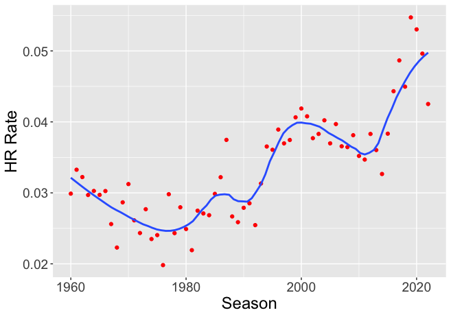
From the smoothing curve pattern, we see …
- A gradual decrease in the home run rate from 1960 to 1980.
- A general increase in the home run rate from 1980 to 2000, followed by a decrease in the rate from 2000 to 2012.
- A large increase in the home run rate from 2012 to 2019.
- A significant decrease in the rate from 2019 through 2022.
The motivation for this work was the observed volatility in the home run rates during the Statcast period from 2015 through 2022. What factors are contributing to the recent changes in home run rates?
3 MLB Home Run Report
3.1 Introduction
Major League Baseball was concerned about the rising rate of home run hitting during the 2015, 2016 and 2017 seasons.. To better understand the potential causes for this rise, they appointed a scientific committee in the Fall of 2017 to explore this issue. The committee released a report in May 2018.
3.2 Potential Reasons for the increase in home run hitting
The MLB report explored a number of potential reasons for the increase in home run hitting.
The batters. Perhaps there have been changes in the characteristics of the batted balls. There variables include the launch angle, the exit velocity and the spray angle.
The pitchers. Maybe there have been changes in the types of pitches thrown, or the location of these pitches about the zone.
The ball. Perhaps there have been changes in how the baseball is made. Some possible ball measurements to study are the seam height, the size of the core, and the drag coefficient.
Game conditions. Maybe there have been changes in the game conditions that led to the changes in HR hitting. These game conditions include the effect of the ballpark, the weather, and particularly the temperature during the game.
3.3 Process of Hitting a Home Run
In the process of exploring home run hitting, the committee identified three key steps in hitting a home run.
IN-PLAY: The batter first has to put the ball in play.
HIT IT RIGHT: The batted ball needs to have the “right” launch angle and exit velocity for the ball to have a good chance of a home run.
REACH THE SEATS: Given the exit velocity and launch angle, the batted ball needs to have sufficient distance and height to clear the fence (the carry of ball)
3.4 Committee’s Findings
Here are some general findings of the committee based on the data from the 2015 through 2017 seasons.
The committee found modest changes in launch angle and exit velocity among batters during thid period.
The committee focused on batted balls in the “RED” zone. These balls have a launch angle between 15 and 40 degrees, launch speed between 90 and 115 mpg.
Batted balls in the RED zone showed more carry. Specifically the balls in the 2017 season traveled further than the 2015 balls.
Based on their work, the MLB committee had several conclusions and recommendations.
The increase in home runs is likely due to better carry (less drag) of the ball for given launch conditions.
This better carrying property is likely due to the aerodynamic properties of the baseball.
The committee was unable to find the characteristic of the manufactured baseballs that led to this behavior.
The committee recommended that MLB monitor the climate environment of the baseballs for future seasons. This can be done by storing the baseballs in a humidor before a game.
4 Empirical Work
4.1 Introduction
At this time, eight seasons of Statcast data (2015 though 2022) are available. For all batted balls, launch speed and launch angle measurements together with an outcome variable are recorded. Given this detailed data, we can now take a broader perspective on home run hitting in this eight-season period.
4.2 Red Zone Rates
We begin by identifying the region of launch angle and launch velocity values where most home runs are hit. The following figure displays contours of the bivariate density estimate of the values of launch angle and launch speed for home runs hit during the 2019 season. A rectangular region is drawn where the launch_angle is between 20 and 35 degrees and the launch_speed is between 95 and 110 mph – 79% of the home runs during the 2019 season were hit with launch variables within this region. We will refer to this region as the “Red zone” – it is the region of the launch variable space where home runs are likely to be hit.
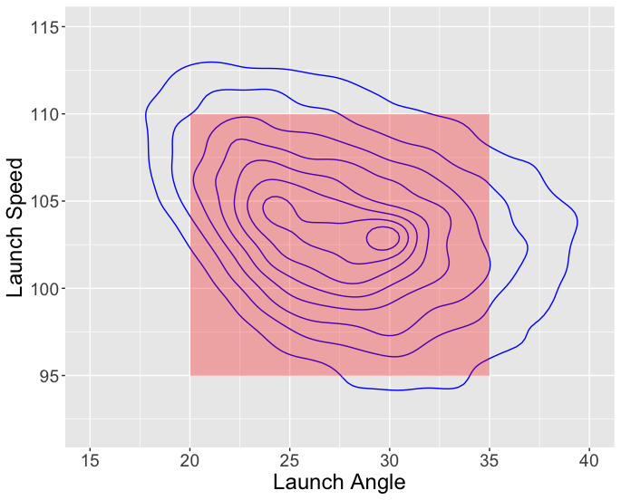
We define the rate of red zone batted balls as the fraction of balls hit within this rectangular region among all batted balls (BIP).
\[ Red \, Zone \, Rate = \frac{Red \, Zone}{BIP} \]
The top panel of the following figure displays values of the red zone rates for the Statcast period.
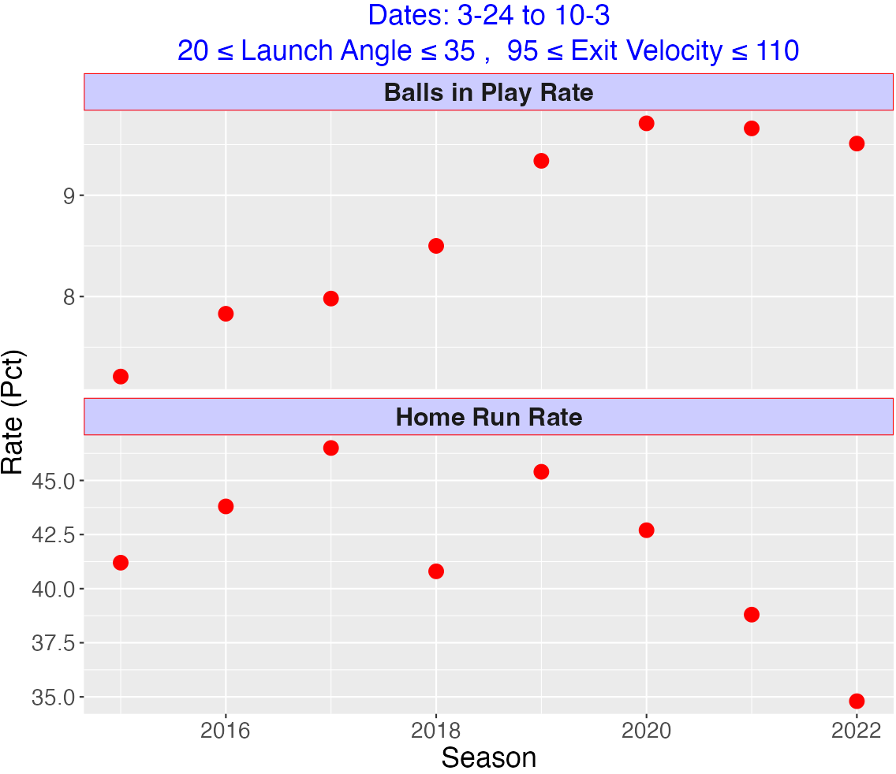
We see a steady increase in “home run likely” rates over Statcast period from 2015 to 2020 with a leveling off from 2020 to 2022. The implication is that batters appear to be changing their hitting approach or they are getting stronger.
Changes in this “home run likely” rate are also evident for individual hitters. We look at all hitters who had at least 200 batted balls in the 2015 season and 100 batted balls in the 2019 season. We collect fraction of red zone balls for each hitter.
The following figure displays a scatterplot of fraction of “home run likely” balls for the two seasons with a smoothing curve added. Note that most of the points fall above the \(y = x\) line. We compute that 75% of the players had a higher red zone fraction in the 2019 season.
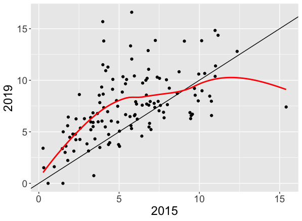
4.3 Home Run Rates Within Red Zone
The previous section considered rates of batted values with “home run desirable” values of launch variables. Here given values of launch angle and exit velocity in the red zone, we define the red zone home run rate to be
\[ Red \, Zone \, HR \, Rate = \frac{HR}{Red \, Zone}\]
Changes in this home run rate reflect changes in the characteristics of the baseball used for different seasons. Specifically, changes in the red zone HR rate can reflect changes in the drag coefficients or carrying properties of the manufactured baseball over seasons.
The bottom panel of the following figure shows values of home run rate for batted balls hit within the red zone.
We see the following interesting patterns in this rate.
- a general increase in this home run rate from 2015 to 2017
- a big dip in the rate in 2018 followed by a big increase in 2019
- a steady decrease in this rate from 2019 to 2022.
The implication is that the MLB baseball was relatively lively in the 2017 and 2019 seasons and relatively dead in recent Statcast seasons. In fact, the home run rate in the red zone in the 2022 season is the lowest among the Statcast seasons.
4.4 Comparing on the Logit Scale
In the previous section, we explored batted ball rates in the red zone and home run rates conditional on being in the red zone. Here we look at these rates in more detail by dividing the red zone into subregions and comparing batted ball and home run rates in each subregion for two seasons of interest.
Rates can be challenging to compare since there is a variability issue. Rates close to 0 and 1 tend to have small variation while rates near 0.5 have high variation. Comparing rates from two seasons is difficult due to this variability problem. A difference of rates of 0.1 has different meanings depending on the sizes of the rates. A rate difference of 0.1 is more significant if the two rates are each near 0 than if the rates are near 0.5.
One useful way to address this variability issue is to reexpress the rates as logits. If \(P\) is a rate, then the logit of \(P\) is \[ logit \, P = \log\left(\frac{P}{1 - P}\right) \] The logits correct this variability issue as logits for small rate values have similar variation as logits for rate values close to 0.5.
When comparing two rates for two seasons, say \(P_1\) and \(P_2\), we look at the difference of the rates on the logit scale: \[ \log\left(\frac{P_2}{1 - P_2}\right) - \log\left(\frac{P_1}{1 - P_1}\right) \] Logits are monotone increasing functions of the rates, so if \(P_2\) is larger than \(P_1\), then the logit of \(P_2\) will also be larger than the logit of \(P_1\).
The first figure below compares the logits of the batted ball rates for the 2019 and 2021 seasons for 12 subregions of the red zone of the launch variable space.
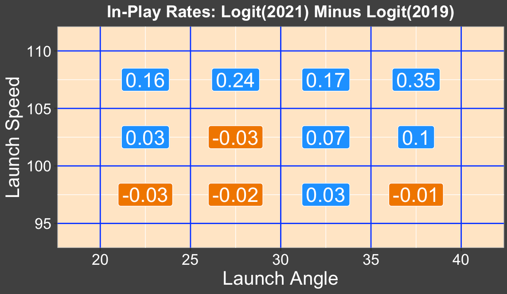
We see that the 2021 logits are larger than the 2019 logits for the four subregions (top row) where the launch speed exceeds 105 mph. This indicates that batters are hitting balls at higher launch speeds during the 2021 season.
The second figure compares the home rates within the subregions for the 2019 and 2021 seasons.
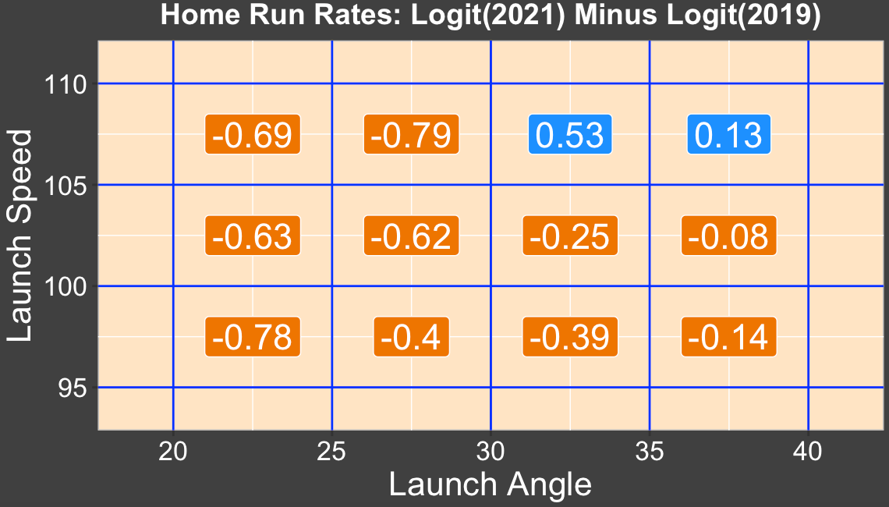
Here we see a significant decrease in home run rates across 10 or the 12 subregions. Since a large number of home runs are hit for launch speeds between 100 and 105 mph, this represents a significant decrease in rates that is causing fewer home runs hit in the 2021 season compared to 2019.
4.5 Summary
Several Shiny apps HomeRunCompare() and LogitHomeRunRates() are available to compare batted ball rates within the red zone and home run rates across the red zone for several Statcast seasons. Some of the output from these apps are presented here. During the Statcast period, batters are clearly hitting balls at increasing exit velocities and launch angles that favor home runs. In contrast, the home run rates for specific launch variable values have shown interesting up and down movement across the Statcast seasons. The modeling work in the next section will be helpful to separate the batter effects from the effects due to the carry properties of the baseball.
5 Modeling Work
5.1 Generalized Additive Model
An alternative way of understanding the changes in home run hitting is by use of a statistical model. We illustrate this approach for a specific example.
Let \(p\) denote the probability that a batted ball is a home run. We relate the home run probability to the launch variables by use of the generalized additive model (GAM) \[ logit(p) = s(LA, LS) \] where \(s()\) is a smooth function of the launch angle (\(LA\)) and the launch speed (\(LS\)).
To illustrate the use of this model, consider all balls put into play for the 2019 season. We fit this GAM model using the gam() function from the mgcv package.
One way to visualize this fit is to set up a grid of values of launch angle and exit velocity and find the fitted probability of a home run for all values in this grid.
We set up a 50 x 50 grid where the launch angle is between 15 and 50 degrees and the exit velocity is between 90 and 110 mph. The below figure displays contours of the home run probability where the contour levels occur for the probability values \(p\) equal to 0.1, 0.3, 0.5, 0.7, 0.9.
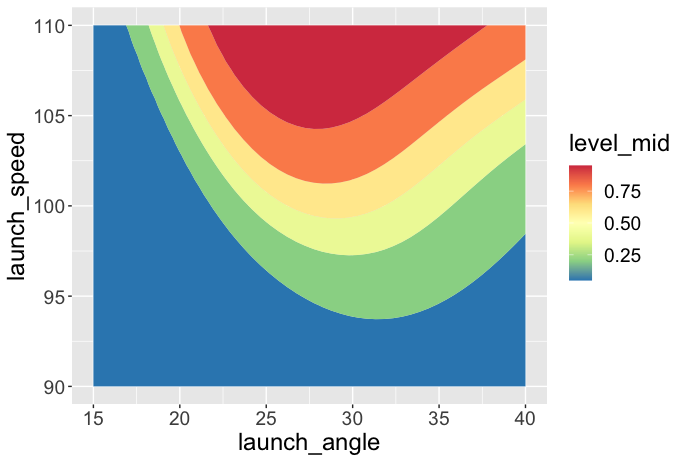
Generally it is likely to hit a home run with a launch angle between 20 and 35 degrees and an exit velocity greater than 100 mph. For a given launch speed such as 100 mph, note that the optimal launch angle is close to 30 degrees.
Other variables are helpful for predicting a home run. For example, the spray angle is an important covariate since the distance from home plate to the fences is smallest for balls hit down the line (spray angles close to -45 and 45 degrees) and largest for balls hit dead center where the spray angle is close to 0.
A residual graph is helpful for understanding the importance of spray angle. The values of spray angle between -45 and 45 degrees were divided into subintervals – for each subinterval, one computes the observed home run count and the expected count from the GAM model. The figure below graphs the residuals (Observed minus Expected) against the midpoints of the intervals.
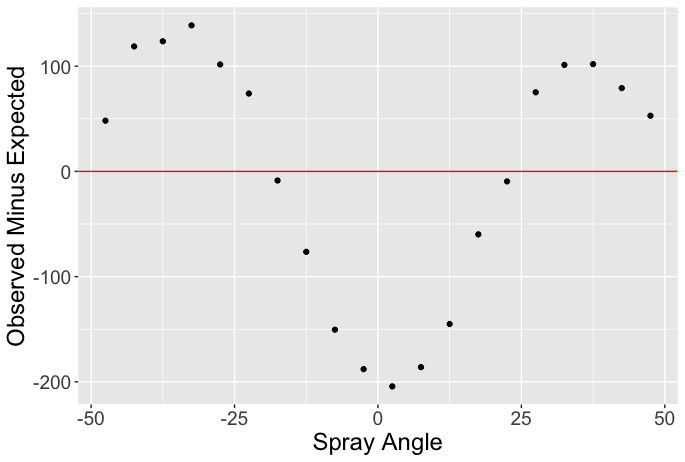
As anticipated, the GAM model underestimates the home run count of balls hit along the lines and overestimates the HR count of balls hit towards center field.
We can also use this GAM model to predict the home run count for individual players. One obtains the predicted home run probabilities for each batter from values of the launch variables, and by summing these predicted probabilities, one obtains an expected HR count. The below figure graphs the residuals (Observed minus Expected) for all players in the 2019 season.
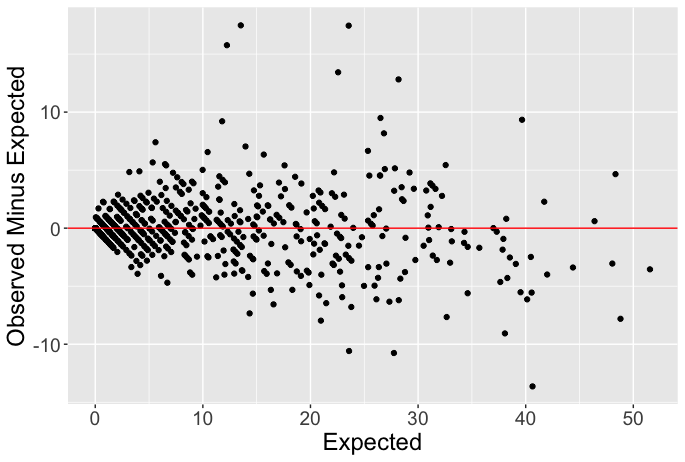
Note that most of the residuals fall beteween -10 and 10, indicating that the GAM model does a reasonable job in predicting HR counts using the launch angle and launch velocity measurements. There are five positive residuals exceeding 10 – these residuals likely correspond to hitters who tend to hit home runs down the lines where the distances to the fences are small.
5.2 Predicting Home Runs in a Future Season
The fitted GAM model indicates the likelihood of a home run given values of the launch angle and exit velocity. Since the properties of the baseball determine its carry behavior, we can refer to this GAM model fit using 2019 season data as a “2019 ball model”.
As we saw in the introduction, there was a significant drop in home run count between the 2019 and 2021 seasons. There are two possible explanations for this decrease:
Player Effect. Perhaps the players are hitting batted balls at less optimal values of launch angles and launch speeds during the 2021 season.
Ball Effect. Instead maybe the balls are not carrying as far in the 2021 season as they were in the 2019 season.
The GAM “ball model” for one season is used to predict the home run count for a future season. By comparing the GAM predictions with the obsrved counts, we can separate out the Player and Ball effects.
We illustrate this method by fitting the GAM model using balls put into play from July in the 2019 season and using this model fit to predict the HR rate for July in the 2021 season. For each of the (launch angle, launch speed) values in July 2021, we use the July 2019 ball model to predict the probability of a home run. By summing these probabilities over all batted balls, we obtain a predicted home run rate. By use of simulation, we can use these probabilities to obtain a distribution of predicted home run rates.
The results of this exercise are summarized in the top panel of the below figure.
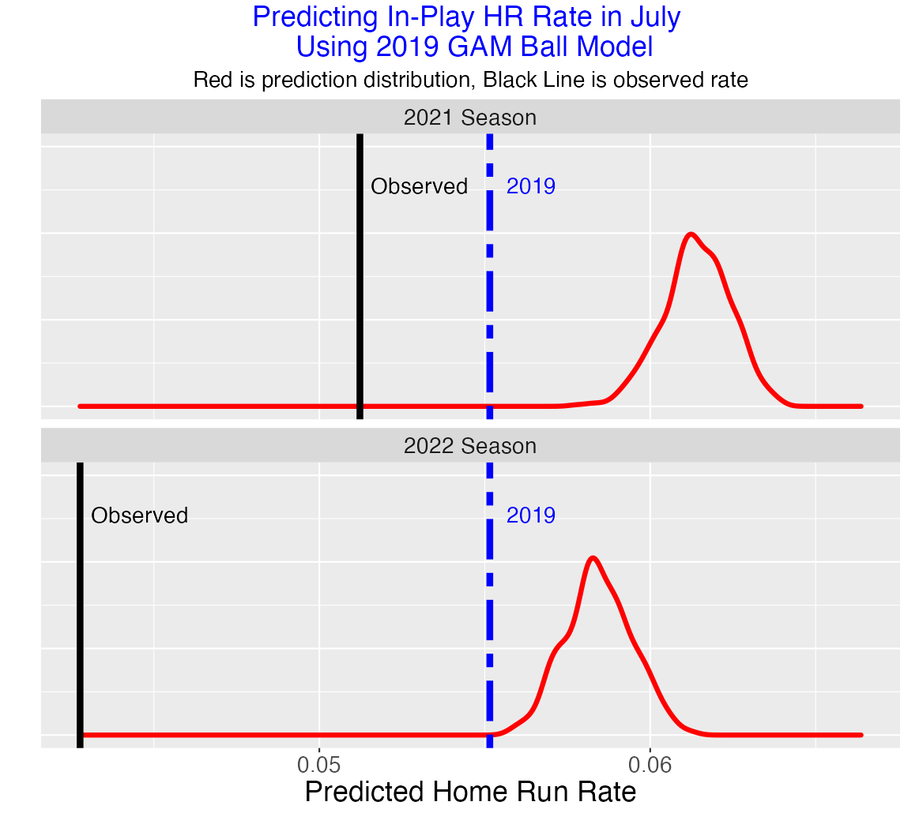
The observed July 2019 home run rate is displayed using a dashed line. Note that the predicted July 2021 distribution is located to the right of the dashed line. On the basis of the 2021 launch variables, we predict the home run rate to increase if baseball was indeed using a ball with similar carry properties to the one used in the 2019 season.
The observed July 2021 home run rate is the black line that is to the left of the prediction distribution. Since this observed HR rate is lower that what we would predict, this indicates that the 2021 ball is not carrying as well as the 2019 ball.
The bottom panel illustrates the same prediction exercise for the 2022 season. We again predict the 2022 home run to be higher than the 2019 rate on the basis of the launch variables if they were using the 2019 ball. But the actual 2022 HR rate is far below the prediction, indicating that the ball is dead, even deader than the ball used in the 2021 season.
5.3 Comparing 2019 and 2022 at Individual Batter Level
In the previous section, we were fitting a model using data from the 2019 season and predicting the overall home run rate for the same period (in the example, July) for a future season. One can implement this method for individual players as follows.
As before, fit a generalized additive model on 2019 data to predict the probability of a home run based on launch angle and exit velocity.
For 2022 data predict probability of HR based on launch variables for all hitters in that season.
Compare the predicted (based on 2019 ball model) and observed 2022 home run counts for all hitters.
The following figure displays a scatterplot of the predicted HR counts (horizontal) against the observed HR counts (vertical). Note that most of the points fall below the y = x line. This indicates that the 2022 observed home runs tend to be smaller than the predicted home runs using the model based on characteristics of the 2019 ball.
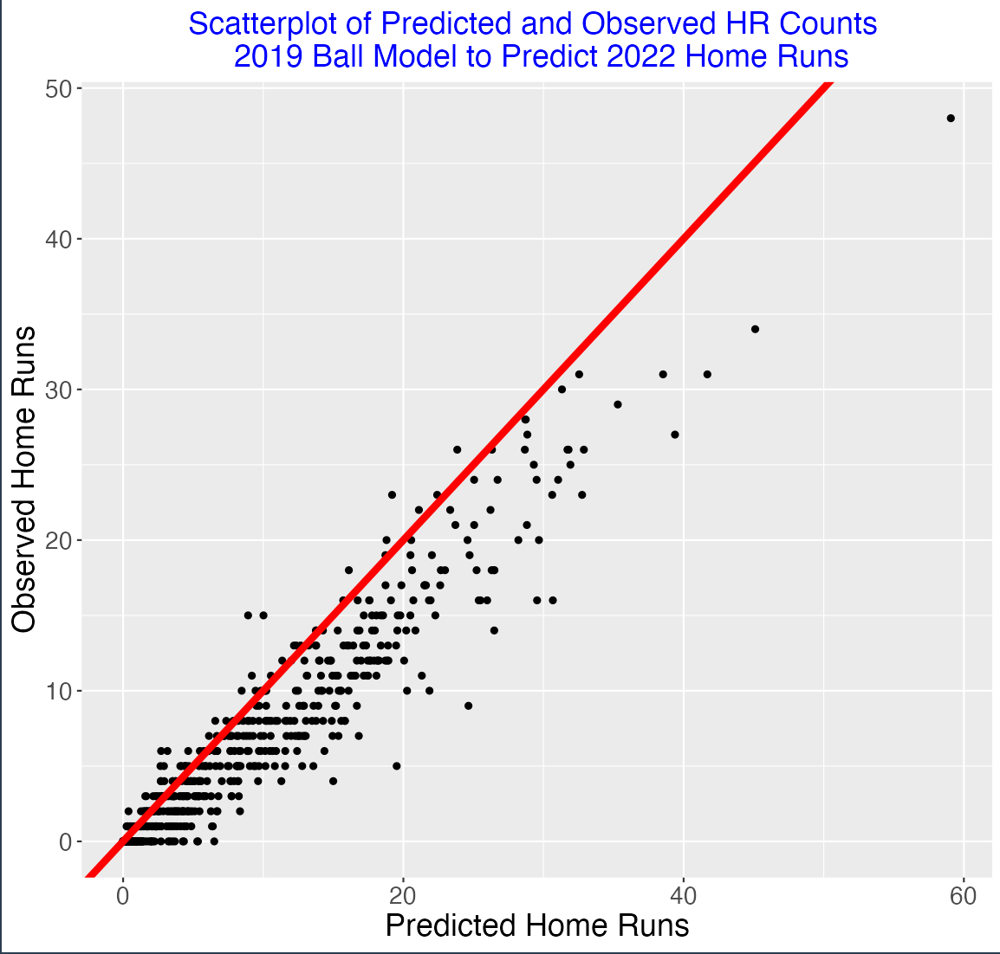
How much smaller are the observed 2022 counts than predicted? Define a residual to be the difference
Residual = Observed minus Predicted Plot
The figure below plots the residuals (vertical) against the predicted HR counts (horizontal) Three sluggers (Riley, Schwarber and Judge) are labeled. Each of them are hitting approximately 10 fewer home runs than predicted from the 2019 ball model.
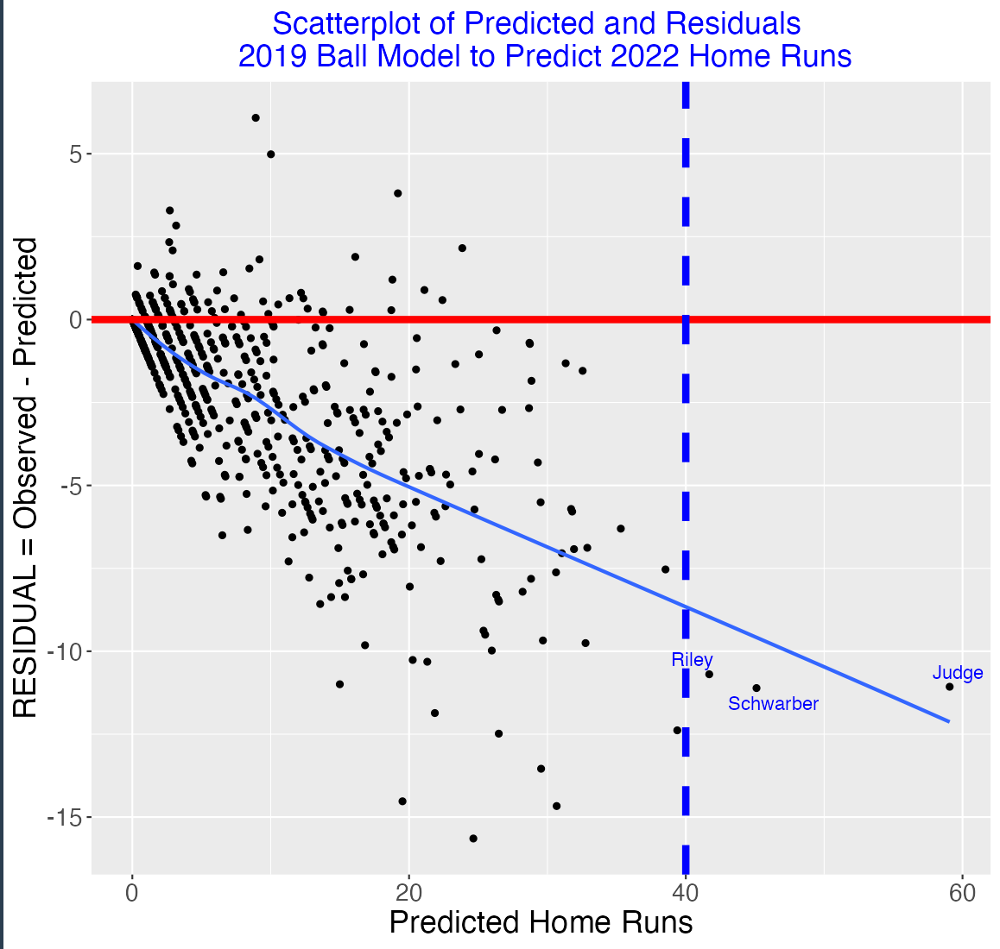
5.4 Aaron Judge
Aaron Judge had a remarkable 2022 hitting season, breaking the American League home run record with 62 home runs. But given the changes in the carry properties of the baseball during the Statcast era, that raises the interesting question:
How many home runs would Aaron Judge hit if he was playing with a ball from a different season with the same values of launch variables for his batted balls?
Here’s the method (I will illustrate the idea for the 2019 season, but I’ll repeat this for all seasons.):
First, I have a fitted GAM model that predicts the probability of a home run given values of the launch angle and launch speed from all batted balls in the 2019 season.
I have the values of the launch variables for all balls in play by Aaron Judge in the current 2022 season. Using these values, using the 2019 ball model, I can compute the probabilities of a home run for all batted balls.
By summing these home run probabilities, I get a prediction of the total number of 2022 Judge home runs if we were using the 2019 ball. These predicted probabilities and a simulation exercise can be used to produce a prediction interval for the total HR count. I present 90% intervals that cover 90% of the prediction distribution.
I repeat this procedure for each of the Statcast seasons 2015 through 2021. Here is a graph of the prediction intervals.
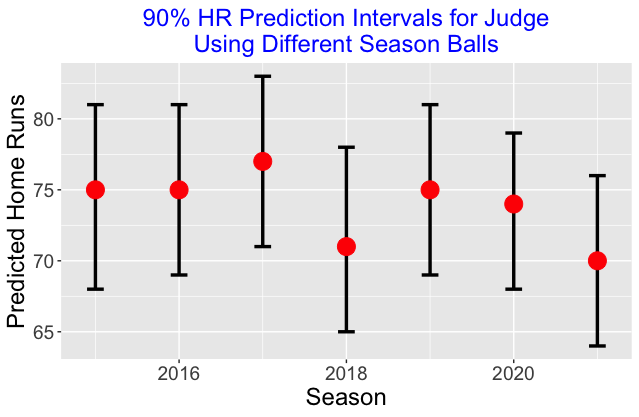
Aaron Judge hit 62 home runs. But using the ball fitted model from each of the previous Statcast seasons, we would predict Judge home run count in 2022 to be in the 70’s. For example, a 90% prediction interval for Judge’s HR count using the 2019 ball would be (69, 81). It is interesting that the highest prediction is for the 2017 season and lowest for the 2018 and 2021 seasons. Judge may have actually eclipsed Barry Bonds single-season record of 73 if MLB in 2022 was using a baseball similar to what was used in the previous Statcast seasons. Perhaps due to this “ball bias”, we don’t appreciate the magnitude of Judge’s accomplishment in the 2022 season.
5.5 Summary
The variation in home run rates are due to a number of different factors such as the hitter and pitcher abilities, the ball and the game conditions. The modelng approach is helpful for understanding how home run hitting is connected with the exit velocity and launch angle. It is especially relevant for understanding the carry properties of the ball. By use of model estimates from one season to predict home runs in a future season, we can understand how much of the change in home runs is due to changes in player hitting behavior and how much is due to changes in the manufactured ball. These predictions can be performed at an individual player level – this illustrates that particular hitting accomplishments such as Aaron Judge’s 62 home runs is best understood in the context of the season where these records were made.
6 References
There are three types of references related to the home run issue. The general articles include two reports by the MLB Committee studying home run rates. There have been a number of posts on the Exploring Baseball Data with R blog. Also there are Shiny apps that allow the user to compare balls in play and home run rates across MLB seasons.
General Articles
- “Report of the Committee Studying Home Run Rates in Major League Baseball” (May 2018)
http://www.insidesocal.com/dodgers/files/2021/10/Full-Report-of-the-Committee-Studying-Home-Run-Rates-in-Major-League-Baseball_052418.pdf
- “Preliminary Report of the Committee Studying Home Run Rates in Major League Baseball” (December 2019)
http://baseball.physics.illinois.edu/HRReport2019.pdf
- Albert, J., “The Home Run Explosion” in Science Meets Sport
https://www.cambridgescholars.com/resources/pdfs/978-1-5275-5856-4-sample.pdf
- “Home Runs and Drag: An Early Look at the 2022 Season” (with Alan Nathan)
https://blogs.fangraphs.com/home-runs-and-drag-an-early-look-at-the-2022-season/
Blog Posts from https://baseballwithr.wordpress.com/
- “Comparing Home Run Rates for Two Seasons”
https://baseballwithr.wordpress.com/2022/04/04/comparing-home-run-rates-for-two-seasons/
- “Player HR Increase Due to Modifications of Swing Behavior”
https://baseballwithr.wordpress.com/2020/04/19/player-hr-increase-due-to-modifications-of-swing-behavior/
- “What if Aaron Judge was Hitting a 2019 Ball?”
https://baseballwithr.wordpress.com/2022/10/03/what-if-aaron-judge-was-hitting-a-2019-ball/
- “2020 Home Run Update: Is it the Ball?”
https://baseballwithr.wordpress.com/2020/09/07/2020-home-run-update-is-it-the-ball/
- “What’s Causing the Home Run Explosion?”
https://baseballwithr.wordpress.com/2019/08/19/whats-causing-the-home-run-explosion/
Shiny Apps
HomeRunRates(): Shiny app to compare home run rates across Statcast era.
https://github.com/bayesball/ShinyBaseball/tree/main/inst/shiny-examples/HomeRunRates
LogitHomeRunRates(): Shiny app to compare balls-in-play and home run rates of two seasons on logit scale.
https://github.com/bayesball/ShinyBaseball/tree/main/inst/shiny-examples/LogitHitRates
HomeRunCompare(): Shiny app to compare balls-in-play and home run rates for two seasons on rate scale.
https://github.com/bayesball/ShinyBaseball/tree/main/inst/shiny-examples/HomeRunCompare
PredictHomeRuns(): Shiny app to use ball model from one season to predict home run rate for future season.
https://github.com/bayesball/ShinyBaseball/tree/main/inst/shiny-examples/PredictHomeRuns